はじめに
Oracle AI Vector Search は、Oracle Database 23aiから追加されている、ベクトル・データを活用したセマンティック検索機能です。機能としては、新たなベクトルデータ型、ベクトル索引、ベクトル検索のSQL演算子が含まれております。これらにより、Oracle Databaseは、文書、画像、その他の非構造化データのセマンティック・コンテンツをベクトルとして格納し、それを活用して迅速な類似性クエリを実行することが可能になります。この機能は、大規模言語モデル(LLM)とプライベートのビジネス・データを組みわせて、ビジネス基準のセキュリティ、性能レベルを満たすためのワークフローであるRetrieval Augmented Generation(RAG)に対応することができ、エンタープライズ向けの高度で強力な検索を可能にします。
この章では、ベクトル列を含んだテーブルの作成、ベクトル列でのDDLおよびDML操作、関数を使用した類似性検索、リレーショナル・データベース上でベクトル・データを扱った操作など、基本的なOracle AI Vector Searchにおけるベクトル・データの操作についてご紹介します。
目次 :
- はじめに
- 1. ベクトル・データを扱ったDDL、DMLを含んだSQLクエリの実行
- 2. ベクトルの距離計算
- 3. 類似性検索
- 4. 属性フィルタリング
- 5. その他の距離関数
- 6. その他のベクトル関数
- 参考資料
前提条件 :
- 101:Always Freeで23aiのADBインスタンスを作成してみようもしくは、102:仮想マシンへOracle Database 23ai Freeをインストールしてみようの記事を参考に、Oracle Database 23aiの準備が完了していること。
所要時間 : 約90分
1. ベクトル・データを扱ったDDL、DMLを含んだSQLクエリの実行
1-1 ユーザに接続 AI Vector Searchを操作するユーザに接続します。
実行コマンド:
ユーザに接続
sqlplus vector/[パスワード]＠[接続文字列]
1-2 ベクトル・データ型を含んだ表の作成
実行コマンド:
表の作成
CREATE TABLE IF NOT EXISTS t1 (v vector);
確認
DESC t1
実行結果:
1-3 ベクトル表にベクトル・データをInsertする
実行コマンド:
ベクトル・データのInsert
INSERT INTO t1 VALUES ('[1.1, 2.7, 3.141592653589793238]'),
('[9.34, 0.0, -6.923]'),
('[-2.01, 5, -25.8]'),
('[-8.2, -5, -1013.6]'),
('[7.3]'),
('[2.9]'),
('[1, 2, 3, 4, 5]') ;
実行結果:
1-4 ベクトル・データの値をSelectする
実行コマンド:
ベクトル・データをSelect
SELECT * FROM t1;
実行結果:
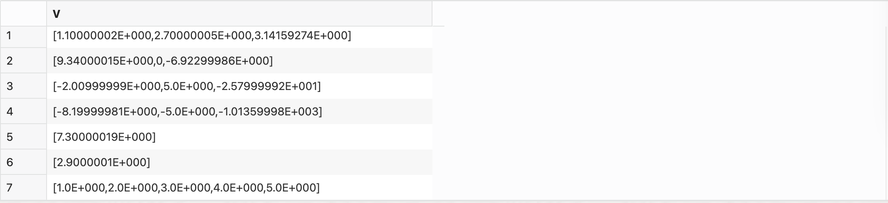
1-5 ベクトル・データの値をUpdateする
実行コマンド:
ベクトル・データをUpdate
UPDATE t1 SET v = '[1.9, -5.02, 4]';
確認
SELECT * FROM t1;
実行結果:
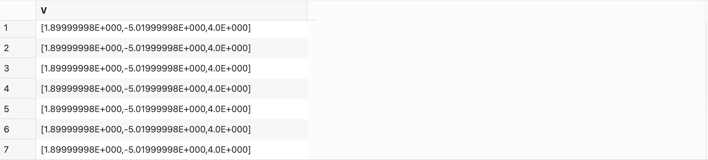
1-6 ベクトル・データに対してDML操作を実行する
ステップ1
実行コマンド:
複数の列を含む表を作成
CREATE TABLE IF NOT EXISTS t2
( id NUMBER NOT NULL,
name VARCHAR2(32),
v1 VECTOR,
PRIMARY KEY (id)
);
確認
DESC t2;
実行結果:
ステップ2
実行コマンド:
作成した表に行をInsert
INSERT INTO t2 VALUES (1, 'A', '[1.1]'),
(2, 'B', '[2.2]'),
(3, 'C', '[3.3]'),
(4, 'D', '[4.4]'),
(5, 'E', '[5.5]');
確認
SELECT * FROM t2;
実行結果:
ステップ3
実行コマンド:
他のリレーショナル・データを使用してベクトル・データをupdate
UPDATE t2
SET v1 = '[2.9]'
WHERE id = 2;
確認
SELECT * FROM t2
WHERE id = 2;
実行結果:
ステップ4
実行コマンド:
行をDelete
DELETE FROM t2
WHERE id IN (1, 3);
確認
SELECT * FROM t2;
実行結果:
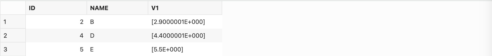
1-7 複数のベクトル・データを含む表の作成
ステップ1
実行コマンド:
表を作成
CREATE TABLE IF NOT EXISTS t3
( id NUMBER NOT NULL,
name VARCHAR2(32),
v1 VECTOR,
v2 VECTOR,
v3 VECTOR,
PRIMARY KEY (id)
);
確認
DESC t3;
実行結果:
ステップ2
実行コマンド:
作成した表に行をInsert
INSERT INTO t3 VALUES
(1,
'One',
'[2.3, 4.5, 0.1]',
'[1.3]',
'[4.981, -6.3]'
);
確認
SELECT * FROM t3;
実行結果:
1-8 次元数が固定値であるベクトル・データの操作
ステップ1
実行コマンド:
次元数と数値の形式が固定値であるベクトル・データをもつ表の作成
CREATE TABLE IF NOT EXISTS t4
( v VECTOR(3, FLOAT32) );
確認
DESC t4;
実行結果:
ステップ2
実行コマンド:
表の次元数や数値の形式に対して異なる値のInsert文はエラーとなる
INSERT INTO t4 VALUES ('[1.1, 2.2, 3.3]');
INSERT INTO t4 VALUES ('[1.2, 2.3, 3.4]');
INSERT INTO t4 VALUES ('[1.2, 2.3, 3.4]');
INSERT INTO t4 VALUES ('[1.3]');
INSERT INTO t4 VALUES ('[1.3, 2.4, 3.5, 4.1]');
INSERT INTO t4 VALUES ('[1.4, 2.5, a]');
実行結果:
前半3つのInsert
後半3つのInsert 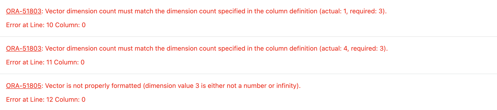
1-9 ベクトル・データに対してDDL操作を実行する
ステップ1
実行コマンド:
既存のテーブルにベクトル・データ(ベクトル列)を追加することができます。まずは、表を作成します。
CREATE TABLE IF NOT EXISTS t6
(
id NUMBER NOT NULL,
name VARCHAR2(32),
PRIMARY KEY (id)
);
作成した表にベクトル列を追加する
ALTER TABLE t6 ADD v1 VECTOR;
ALTER TABLE t6 ADD v2 VECTOR(2, float32);
確認
DESC t6;
実行結果:
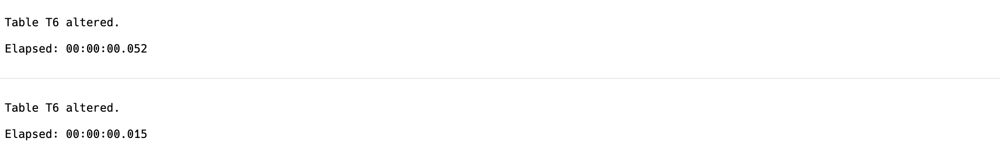
ステップ2
実行コマンド:
ベクトル列を除外する
ALTER TABLE t6 DROP COLUMN v2;
確認
DESC t6;
表を削除する
DROP TABLE IF EXISTS t6;
実行結果:
ステップ3
実行コマンド:
ベクトル・データを含む他の表を使用して表を作成することができます。
CREATE TABLE IF NOT EXISTS t7
AS SELECT * FROM t3;
確認
DESC t7;
SELECT * FROM t7;
実行結果:
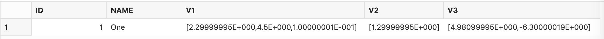
1-10 ベクトル・データベースで不可能な操作
実行コマンド:
以下のようなベクトル・データ同士を直接比較するような操作はできません。
SELECT id, name FROM t2
WHERE v1 IN (SELECT v FROM t1 WHERE t2.v1 = t1.v );
SELECT id, name FROM t2 WHERE v1 = '[2.9]';
SELECT id, name FROM t2 WHERE v1 = vector('[2.9, 0]', 2, float32);
実行結果:
3構文とも以下のエラーが発生する。
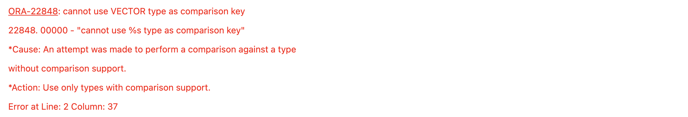
2. ベクトルの距離計算
vector_distance()関数を使用することで2つのベクトル間の距離を計算することができます。また、to_number()と組み合わせることで、出力を指数表記から読みやすいnumber型に変換することができます。
実行コマンド:
(5,-2)と(-3,-4)の距離計算を実行します。
SELECT TO_NUMBER(VECTOR_DISTANCE(
VECTOR('[5, -2]', 2, FLOAT32),
VECTOR('[-3, -4]',2, FLOAT32),
EUCLIDEAN)) DISTANCE;
実行結果:
3. 類似性検索
3-1 サンプル表の作成
ステップ1
実行コマンド:
表の作成
CREATE TABLE IF NOT EXISTS vt1
(id NUMBER NOT NULL,
v VECTOR(2, FLOAT32),
PRIMARY KEY (id)
);
確認
DESC vt1;
実行結果:
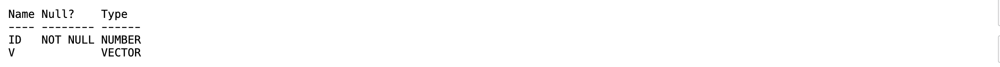
ステップ2
実行コマンド:
以下のようなベクトル・データを追加していきます。ベクトル・データは似た値同士をもつ5つのクラスターに分かれています。
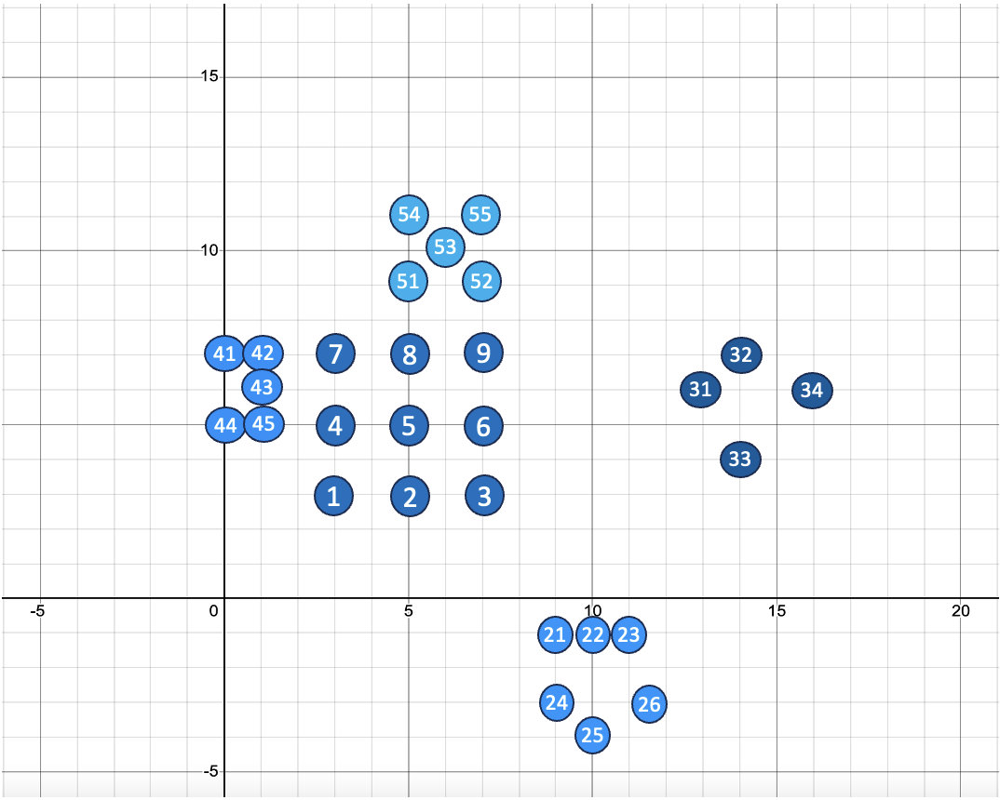
データの追加
INSERT INTO vt1 VALUES (1, '[3, 3]'),
(2, '[5, 3]'),
(3, '[7, 3]'),
(4, '[3, 5]'),
(5, '[5, 5]'),
(6, '[7, 5]'),
(7, '[3, 7]'),
(8, '[5, 7]'),
(9, '[7, 7]');
INSERT INTO vt1 VALUES (21, '[9, -1]'),
(22, '[10, -1]'),
(23, '[11, -1]'),
(24, '[9, -3]'),
(25, '[10, -4]'),
(26, '[12, -3]') ;
INSERT INTO vt1 VALUES (31, '[13, 6]'),
(32, '[14, 7]'),
(33, '[14, 4]'),
(34, '[16, 6]') ;
INSERT INTO vt1 VALUES (41, '[0, 7]'),
(42, '[1, 7]'),
(43, '[1, 6]'),
(44, '[0, 5]'),
(45, '[1, 5]') ;
INSERT INTO vt1 VALUES (51, '[5, 9]'),
(52, '[7, 9]'),
(53, '[6, 10]'),
(54, '[5, 11]'),
(55, '[7, 11]') ;
COMMIT;
確認
SELECT * FROM vt1;
実行結果:
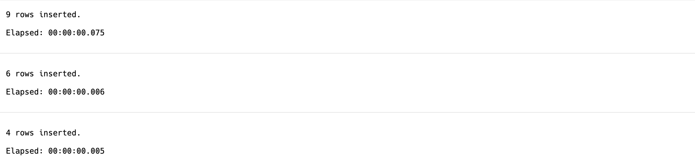
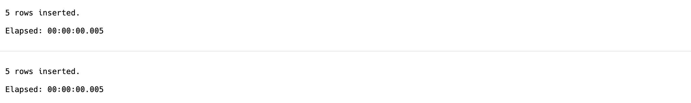
3-2 類似性検索の実行
ベクトル・データq(7,-5)に近い5つのベクトルを検索します。 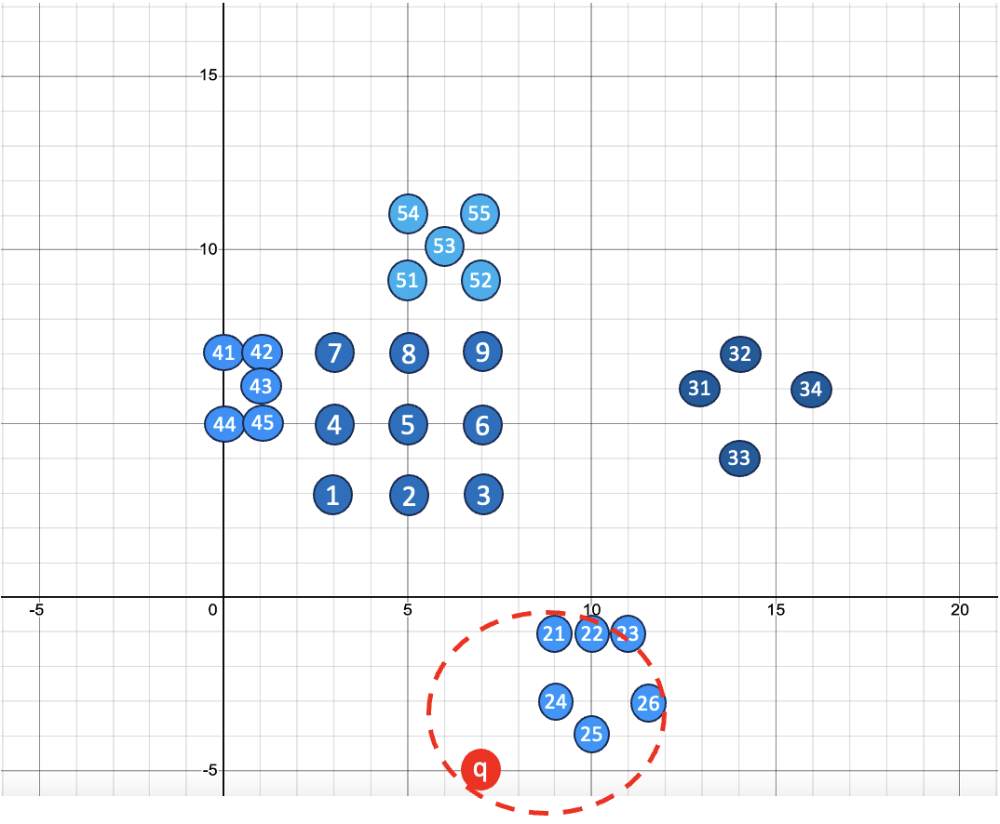
実行コマンド:
類似性検索
SELECT id
FROM vt1
ORDER BY vector_distance(vector('[7, -5]'), v)
FETCH FIRST 5 ROWS ONLY;
実行結果:
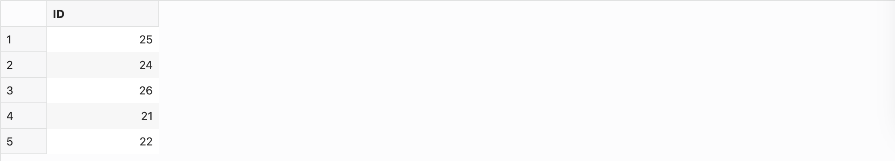
4. 属性フィルタリング
4-1 サンプル表の作成
以下のようなイメージで、3. 類似性検索で作成したVT1表からVT2表を作成し、各項目(形、色、サイズ)でベクトル・データをそれぞれマッピングする。 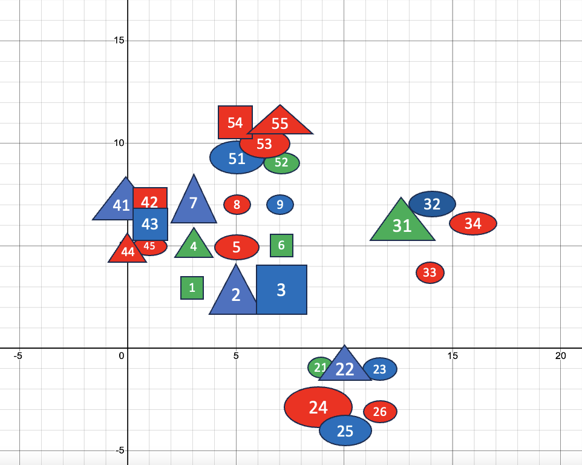
ステップ1
実行コマンド:
表の作成
CREATE TABLE vt2 AS SELECT * FROM vt1;
ALTER TABLE vt2 ADD (vsize varchar2(16),
shape varchar2(16),
color varchar2(16)
);
確認
DESC vt2;
実行結果:
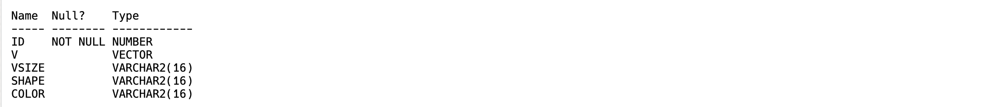
ステップ2
各データの項目(サイズ、形、色)を設定します。
実行コマンド:
サイズの設定
UPDATE vt2
SET vsize = 'Small'
WHERE id IN (1, 4, 6, 8, 9, 21, 23, 26, 33, 44, 45, 52);
UPDATE vt2
SET vsize = 'Medium'
WHERE id IN (5, 22, 25, 32, 34, 42, 43, 53, 54, 55);
UPDATE vt2
SET vsize = 'Large'
WHERE id IN (2, 3, 7, 24, 31, 41, 51);
形の設定
UPDATE vt2
SET shape = 'Square'
WHERE id IN (1, 3, 6, 42, 43, 54);
UPDATE vt2
SET shape = 'Triangle'
WHERE id IN (2, 4, 7, 22, 31, 41, 44, 55);
UPDATE vt2
SET shape = 'Oval'
WHERE id IN (5, 8, 9, 21, 23, 24, 25, 26, 32, 33, 34, 45, 51, 52, 53);
色の設定
UPDATE vt2
SET color = 'Red'
WHERE id IN (5, 8, 24, 26, 33, 34, 42, 44, 45, 53, 54, 55);
UPDATE vt2
SET color = 'Green'
WHERE id IN (1, 4, 6, 21, 31, 52);
UPDATE vt2
SET color = 'Blue'
WHERE id IN (2, 3, 7, 9, 22, 23, 25, 32, 41, 43, 51);
COMMIT;
確認
SELECT id, vsize, shape, color, v
FROM vt2
ORDER BY id;
実行結果:
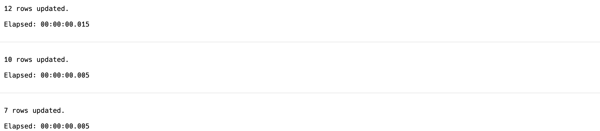
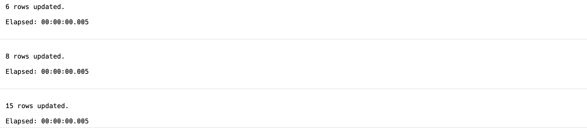
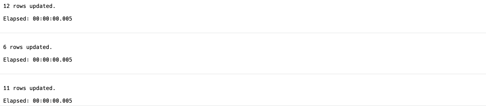
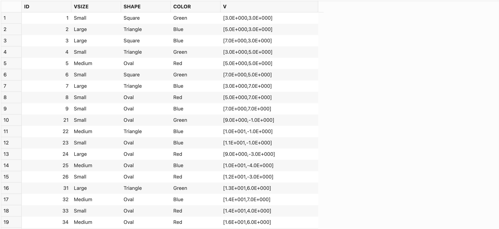
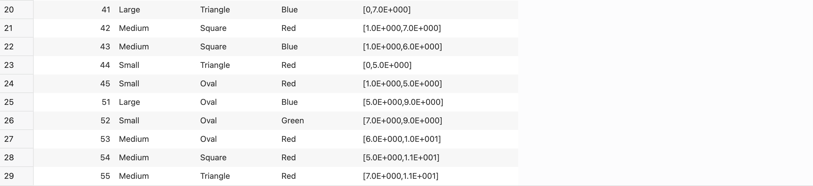
ステップ3
各項目ごとのデータ数を算出します。
実行コマンド:
SELECT vsize, count(vsize)
FROM vt2
GROUP BY vsize;
SELECT color, COUNT(color)
FROM vt2
GROUP BY color;
SELECT shape, COUNT(shape)
FROM vt2
GROUP BY shape;
実行結果:
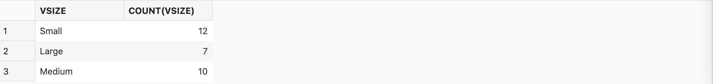
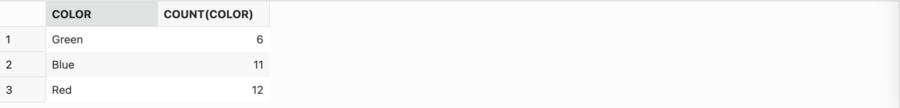
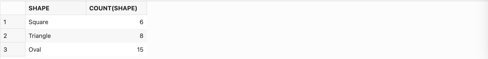
4-2 属性フィルタリングを使用した類似性検索
ステップ1
以下のように、ベクトル(16,3)に最も近い3件のベクトル・データで、IDが30より大きく、40より小さく、形が”Oval”であるものを検索します。 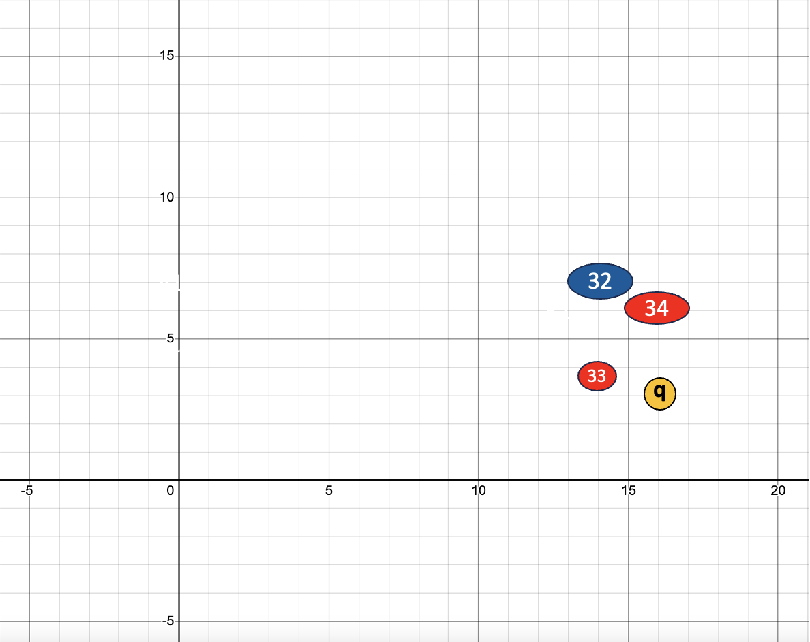
実行コマンド:
SELECT id, vsize, shape, color,
to_number(vector_distance(vector('[16, 3]'), v)) distance
FROM vt2
WHERE id > 30 AND id < 40
AND shape = 'Oval'
ORDER BY vector_distance(vector('[16, 3]'), v)
FETCH FIRST 3 ROWS ONLY;
実行結果:
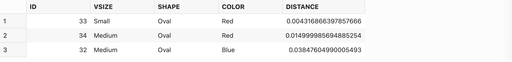
ステップ2
以下の画像のベクトルデータの中から、ベクトル(6, 8)に最も近い10件のベクトル・データで、色が”Red”で、形が”Oval”であるものを検索します。 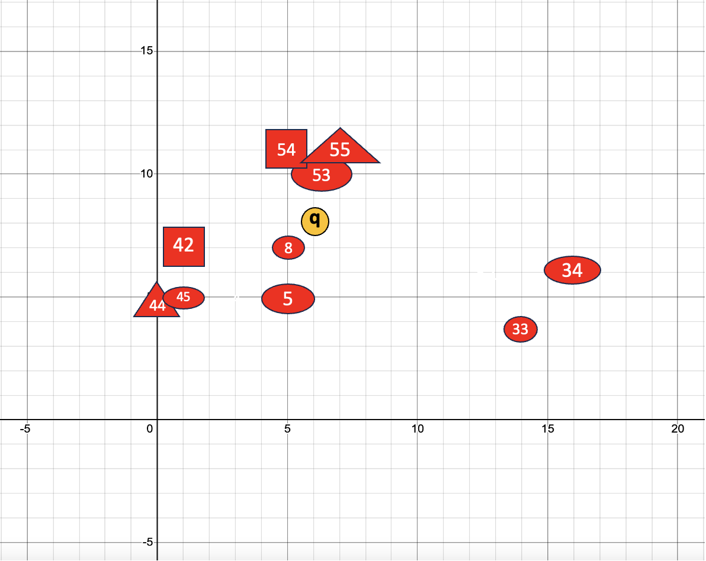
実行コマンド:
SELECT id, vsize, shape, color
FROM vt2
WHERE color = 'Red'
AND shape = 'Oval'
ORDER BY vector_distance(vector('[6, 8]'), v)
FETCH FIRST 10 ROWS ONLY;
実行結果:
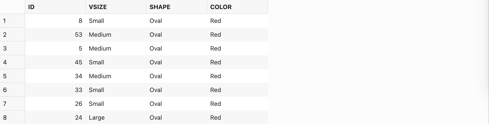
形がOval(楕円形)のベクトル・データのみ出力されています。
5. その他の距離関数
5-1 サンプル表の作成
4. 属性フィルタリングで作成したVT2表を元にVT3表を作成します。
実行コマンド:
表の作成
CREATE TABLE vt3 AS SELECT * FROM vt2;
確認
SELECT * FROM vt3 ORDER BY 1;
実行結果:
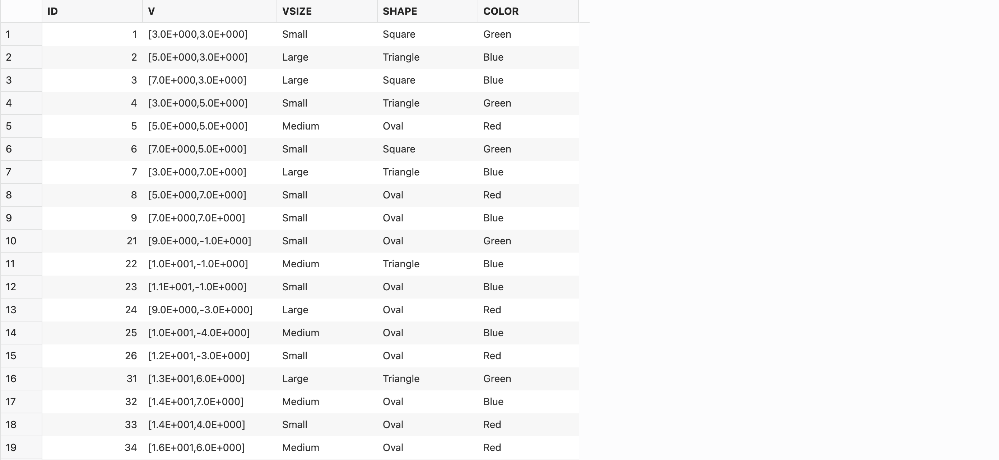
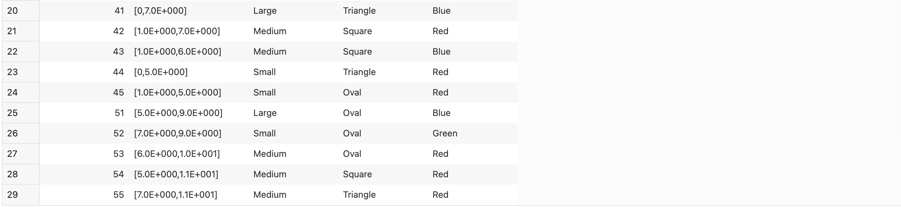
5-2 vector_distance関数の様々な距離計算手法を使用する
COSINE, EUCLIDEAN, DOT, MANHATTAN, HAMMINGの5つの手法を使用して、ベクトル(16,4)に最も近い4つのベクトル・データを検索します。
実行コマンド:
COSINE
SELECT id, vsize, shape, color
FROM vt3
ORDER BY vector_distance( vector('[16, 4]'), v, COSINE)
FETCH FIRST 4 ROWS ONLY;
EUCLIDEAN
SELECT id, vsize, shape, color
FROM vt3
ORDER BY vector_distance( vector('[16, 4]'), v, EUCLIDEAN)
FETCH FIRST 4 ROWS ONLY;
DOT
SELECT id, vsize, shape, color
FROM vt3
ORDER BY vector_distance(vector('[16, 4]'), v, DOT)
FETCH FIRST 4 ROWS ONLY;
MANHATTAN
SELECT id, vsize, shape, color
FROM vt3
ORDER BY vector_distance(vector('[16, 4]'), v, MANHATTAN)
FETCH FIRST 4 ROWS ONLY;
HAMMING
SELECT id, vsize, shape, color
FROM vt3
ORDER BY vector_distance( vector('[16, 4]'), v, HAMMING)
FETCH FIRST 4 ROWS ONLY;
実行結果:
COSINE
EUCLIDEAN
DOT
MANHATTAN 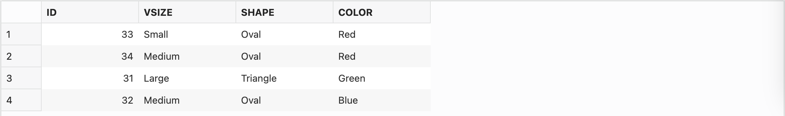
HAMMING
5-3 vector_distance関数の代替関数
5-2で紹介したvector_distance関数の他に、L1_DISTANCE, L2_DISTANCE, COSINE_DISTANCE, INNER_PRODUCTという関数で指定することができ、関数の表記を簡略化することができます。 それぞれ以下のような関係があります。
- L1_DISTANCE = MANHATTAN
- L2_DISTANCE = EUCLIDEAN
- COSINE_DISTANCE = COSINE
- -1*INNER_PRODUCT = DOT
これらを使用して、ベクトル(16,4)に最も近い4つのベクトル・データを検索します。
実行コマンド:
L1_DISTANCE
SELECT id, vsize, shape, color
FROM vt3
ORDER BY L1_DISTANCE(vector('[16, 4]'), v)
FETCH FIRST 4 ROWS ONLY;
L2_DISTANCE
SELECT id, vsize, shape, color
FROM vt3
ORDER BY L2_DISTANCE(vector('[16, 4]'), v)
FETCH FIRST 4 ROWS ONLY;
COSINE_DISTANCE
SELECT id, vsize, shape, color
FROM vt3
ORDER BY COSINE_DISTANCE( vector('[16, 4]'), v)
FETCH FIRST 4 ROWS ONLY;
INNER_PRODUCT
SELECT id, vsize, shape, color
FROM vt3
ORDER BY -1*INNER_PRODUCT(vector('[16, 4]'), v)
FETCH FIRST 4 ROWS ONLY;
実行結果:
L1_DISTANCE
L2_DISTANCE 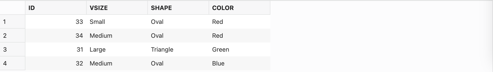
COSINE_DISTANCE
INNER_PRODUCT 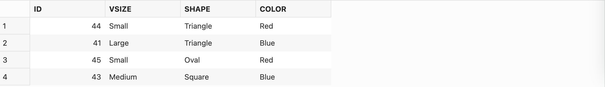
5-4 vector_distance関数の代替記法
5-3で紹介した関数の他にも距離関数の表記を短縮できる代替記法があります。”<->”, “<=>”, “<#>”です。それぞれ以下のような関係があります。
- <-> = L2_DISTANCE = EUCLIDEAN
- <=> = COSINE_DISTANCE = COSINE
- <#> = -1*INNER_PRODUCT = DOT
これらを使用して、ベクトル(16,4)に最も近い4つのベクトル・データを検索します。
実行コマンド:
<->
SELECT id, vsize, shape, color
FROM vt3
ORDER BY vector('[16, 4]') <-> v
FETCH FIRST 4 ROWS ONLY;
<=>
SELECT id, vsize, shape, color
FROM vt3
ORDER BY vector('[16, 4]') <=> v
FETCH FIRST 4 ROWS ONLY;
<#>
SELECT id, vsize, shape, color
FROM vt3
ORDER BY vector('[16, 4]') <#> v
FETCH FIRST 4 ROWS ONLY;
実行結果:
<-> 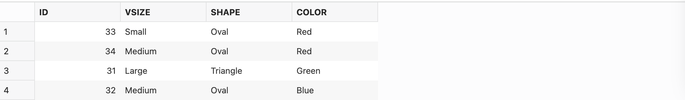
<=>
<#>
6. その他のベクトル関数
ステップ1
to_vector()関数によって文字列をベクトル・データに変換できます。
実行コマンド:
to_vector
SELECT to_vector('[34.6, 77.8]', 2, float32) FROM dual;
SELECT to_vector('[34.6, 77.8, -89.34]', 3, float32);
実行結果:

ステップ2
vector_norm()関数は原点からベクトル・データの距離を返します。
実行コマンド:
vector_norm()
SELECT vector_norm(vector('[4, 3]', 2, float32) );
実行結果:
ステップ3
vector_dimension_count()関数はベクトル・データの次元数を返します。
実行コマンド:
vector_dimension_count()
SELECT vector_dimension_count(vector('[34.6, 77.8]', 2, float64));
SELECT vector_dimension_count(vector('[34.6, 77.8, 9]', 3, float32));
実行結果:
ステップ4
vector_dimension_format()関数はベクトル・データの数値の形式を返します。
実行コマンド:
vector_dimension_format()
SELECT vector_dimension_format(vector('[34.6, 77.8]', 2, float64));
SELECT vector_dimension_format(vector('[34.6, 77.8, 9]', 3, float32));
実行結果:
ステップ5
vector_serialize()関数または、from_vector()関数によってベクトル・データを文字列もしくはCLOBに変換することができます。
実行コマンド:
vector_serialize()で文字列に変換
SELECT vector_serialize(vector('[1.1, 2.2, 3.3]', 3, float32)
returning varchar2(1000));
from_vector()で文字列に変換
SELECT from_vector(vector('[1.1, 2.2, 3.3]', 3, float32) returning varchar2(1000));
実行結果:
vector_serialize()
from_vector()
以上で、Oracle AI Vector Searchの基本操作を試してみようは終了です。